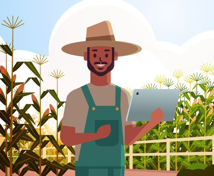
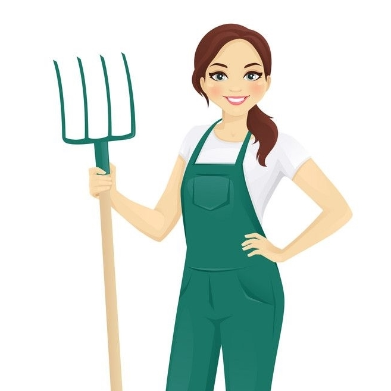
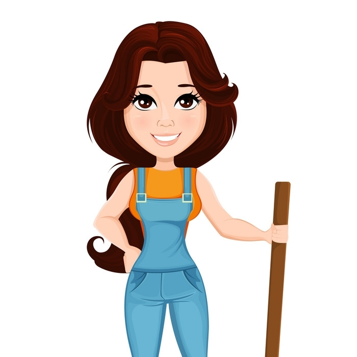
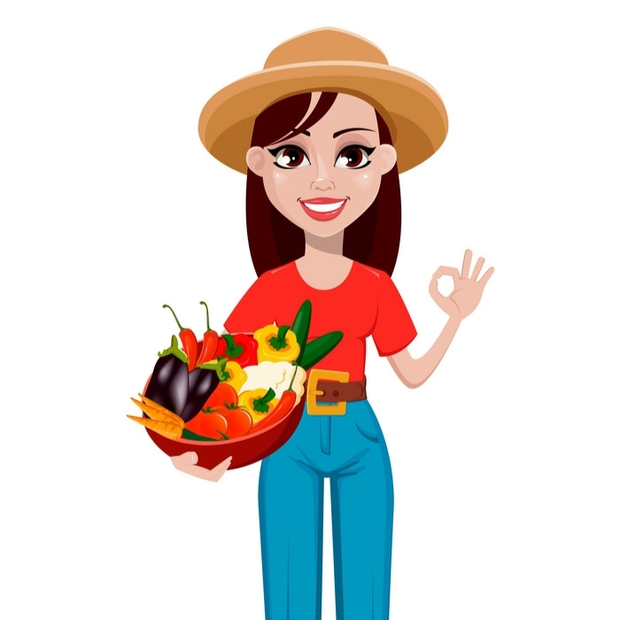

शोधकर्ताओं द्वारा मशीन लर्निंग का उपयोग कोशिका वृद्धि में सहायता और आपसी छायांकन को रोकने के लिए किया जा रहा है। कम लागत वाले बायोमास संग्रह और लागत प्रभावी अर्ध-निरंतर शैवाल उत्पादन (एसएसी) को पूरा करने के लिए एकत्रीकरण पर आधारित एक अवसादन दृष्टिकोण भी विकसित किया जा रहा है। शैवाल में जैव ईंधन स्रोत के रूप में इतनी क्षमता है कि वैज्ञानिक लंबे समय से इस पर शोध कर रहे हैं। उन्होंने हमारे मंगल ग्रह की खोज के लिए ऑक्सीजन की आपूर्ति के लिए 3डी प्रिंटेड कृत्रिम शैवाल के पत्तों का भी निर्माण किया। अब, टेक्सास ए एंड एम एग्रीलाइफ रिसर्च विशेषज्ञ एक विश्वसनीय जैव ईंधन स्रोत के रूप में शैवाल पैदा करने के लिए एक नया विश्व रिकॉर्ड स्थापित करने के लिए कृत्रिम बुद्धि का उपयोग कर रहे हैं, जेट विमानों और परिवहन के अन्य तरीकों के लिए एक हरियाली और अधिक लागत प्रभावी ईंधन स्रोत का मार्ग प्रशस्त कर रहे हैं।
 रोहन मित्तल उम्र 37पराली को स्थानीय भाषा में पराली के नाम से भी जाना जाता है, यह जानबूझकर फसल के अवशेषों में आग लगाने की प्रथा है जिसमें धान जैसी उपज वाली फसलों के तने (ठूंठ), पत्ते, डंठल और बीज की फली शामिल हैं। यह आमतौर पर उन क्षेत्रों में किया जा रहा है जहां संयुक्त कटाई विधियों का उपयोग किया जाता है। भारत में अभी भी इस तकनीक का बड़े पैमाने पर अभ्यास किया जा रहा है। पराली को स्थानीय भाषा में पराली के नाम से भी जाना जाता है, यह जानबूझकर फसल के अवशेषों में आग लगाने की प्रथा है जिसमें धान जैसी उपज वाली फसलों के तने (ठूंठ), पत्ते, डंठल और बीज की फली शामिल हैं। यह आमतौर पर उन क्षेत्रों में किया जा रहा है जहां संयुक्त कटाई विधियों का उपयोग किया जाता है। भारत में अभी भी इस तकनीक का बड़े पैमाने पर अभ्यास किया जा रहा है।
 कृतिका मधुकरी उम्र 45इस लेख में, हमने शीर्ष 10 गैर सरकारी संगठनों को सूचीबद्ध किया है जो ग्रामीण भारत के किसानों को उनकी फसल उगाने और बनाए रखने के लिए सशक्त बनाने के लिए कड़ी मेहनत कर रहे हैं। भारत में खेती हमेशा सबसे महत्वपूर्ण आर्थिक गतिविधि रही है। सरकारी आंकड़ों के अनुसार, भारत की आधी से अधिक आबादी जीवन यापन के लिए कृषि पर निर्भर है, जिनमें से अधिकांश छोटे और सीमांत किसान हैं। खराब बुनियादी ढांचे, आधुनिकता की कमी और घटते उत्पादन ने भारतीय किसानों के लिए कर्ज और गरीबी के चक्र से बाहर आना मुश्किल बना दिया है। फसल खराब होने और कर्ज चुकाने में असमर्थता के कारण हर साल हजारों किसान अपनी जान ले लेते हैं।
 एम कनिका उम्र 35हमारे भारत में सब्जियों के लिए कोल्ड स्टोरेज की अत्यधिक मांग है। सब्जियों के लिए कोल्ड स्टोरेज की कमी और उचित कोल्ड स्टोरेज की कमी के कारण कई सब्जियां बर्बाद हो जाती हैं। कोल्ड स्टोरेज एक अत्यधिक लाभदायक व्यवसाय है। हमारे देश में सब्जियों के लिए कोल्ड स्टोरेज की अत्यधिक आवश्यकता है। सब्जियों के लिए अपर्याप्त और अनुचित कोल्ड स्टोरेज के परिणामस्वरूप कई सब्जियां बर्बाद हो जाती हैं। कोल्ड स्टोरेज एक आकर्षक व्यवसाय है। विकसित और विकासशील दोनों देशों में कोल्ड स्टोरेज की अत्यधिक मांग है। भण्डारण सुविधा के अनुसार कोल्ड स्टोरेज दो प्रकार के होते हैं जिनकी मांग अधिक होती है !
 आयुषी रैना उम्र 40